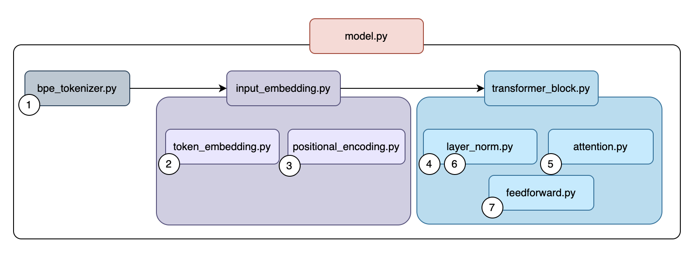

GPT-Style Model from Scratch
This project is a complete implementation of a GPT-style decoder-only transformer built from scratch in PyTorch. Rather than using high-level libraries, every component is hand-crafted to provide a deep understanding of how modern language models work.

For the complete source code, educational notebooks, and training scripts, check out the project on GitHub → GitHub repository
The project includes a complete training pipeline: you can train the model with just a data.txt file containing raw text,
and optionally fine-tune it using RLHF (Reinforcement Learning from Human Feedback) with prompt-response pairs and ratings.
Key components of the transformer architecture (built from scratch):
- BPE Tokenizer: Byte-Pair Encoding implementation for text-to-token conversion.
- Token Embeddings: Learnable dense vector representations of tokens.
- Positional Encoding: Sinusoidal position information added to embeddings.
- Multi-Head Self-Attention: Causal attention mechanism for autoregressive generation.
- Feed-Forward Networks: Position-wise MLP layers.
- Layer Normalization: Training stabilization technique.
- Transformer Blocks: Combining attention, FFN, and residual connections.
What makes this project unique:
- Educational Focus: Each component has a dedicated notebook explaining the theory and implementation.
- Bottom-Up Learning: Independent components are introduced first, then combined progressively.
- Complete Pipeline: From tokenization to pre-training to fine-tuning to inference.
- Modular Design: Clean separation between components makes the code easy to understand and modify.
- Self-Supervised Learning: The model creates its own training data from raw text by predicting the next token.
The training process is elegantly simple: given a sequence of words, predict the next one. Through millions of iterations, the model learns grammar, facts, context, and even writing style—all without explicit human labels. This is the same fundamental approach used by large language models like GPT-3 and GPT-4.
This project serves as a comprehensive educational resource for anyone wanting to understand transformers from the ground up, providing both theoretical knowledge through notebooks and practical implementation through clean, documented code.
Front page